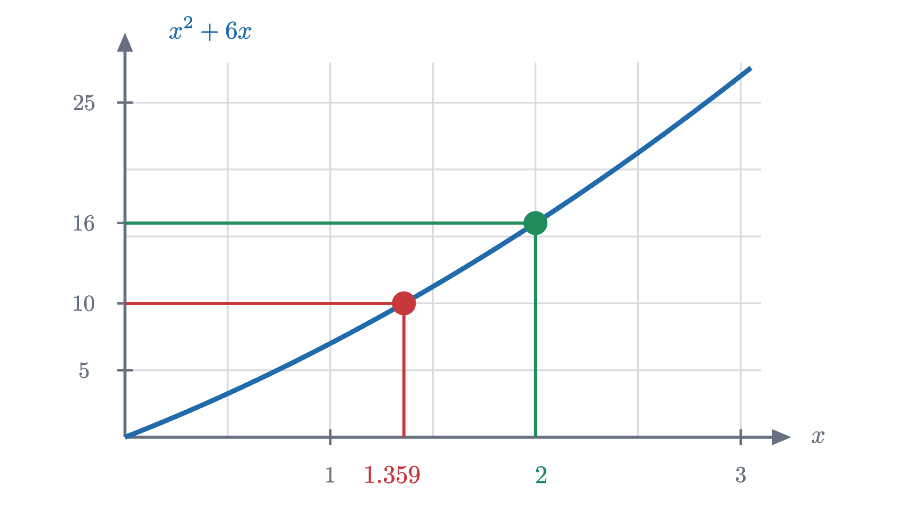
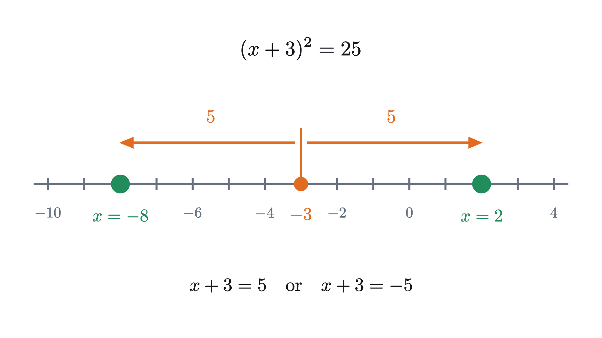
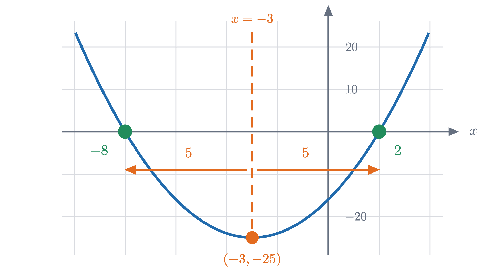

Completing the square and the quadratic formula
Solve x² + 6x = 16 by rearranging a square and a rectangle into a bigger square with one corner missing, then turn that picture into the quadratic formula.
AssumesThe distributive law as a picture: FOIL and (a+b)²Why is a negative times a negative positive?
Try to solve
If the equation were $x^2 = 16$ you would take a square root and be done. If it were $6x = 16$ you would divide by 6. The trouble is that $x$ appears twice, once squared and once not, and no single operation undoes both at the same time. Taking the square root of both sides produces $\sqrt{x^2 + 6x}$, which does not simplify. Dividing by $x$ gives $x + 6 = 16/x$, which still has $x$ on both sides.
This lesson follows a method that is about twelve hundred years old. It rearranges the left side, by cutting and moving areas, until the equation says “something squared equals a number”, which is the kind of equation a square root does solve. The method is called completing the square. Applied once to an equation with letters for coefficients, it produces the quadratic formula.
What goes wrong with guessing
One natural first move is to factor the left side: $x^2 + 6x = x(x + 6)$, so we want two numbers that differ by 6 and multiply to 16. Trying small numbers, $2 \times 8 = 16$, so $x = 2$ works. Check: $2^2 + 6 \times 2 = 4 + 12 = 16$.
Guessing succeeded because the answer was a whole number. Change the right side to 10 and it fails. At $x = 1$ the left side is 7 and at $x = 2$ it is 16, so the solution of $x^2 + 6x = 10$ is somewhere between 1 and 2, and no amount of trying whole numbers will find it.

A second tempting move is worse. From $x(x + 6) = 16$ some students conclude that $x = 16$ or $x + 6 = 16$. That reasoning is valid only when the right side is 0, because a product is zero exactly when one factor is zero. Nothing similar holds for 16: at $x = 16$ the product is $16 \times 22 = 352$.
So we need a method that does not depend on the answer being convenient.
An equation we can solve
It helps to look first at an equation of the same family that is easy.
Pause and try
Find every real number $x$ with $(x + 3)^2 = 25$. There is more than one.
Show answerHide answer
The quantity $x + 3$ is a number whose square is 25, so $x + 3 = 5$ or $x + 3 = -5$. That gives $x = 2$ or $x = -8$. Check the second one: $(-8 + 3)^2 = (-5)^2 = 25$.
This equation also contains $x^2$ and a multiple of $x$, which you can see by expanding: $(x+3)^2 = x^2 + 6x + 9$. They are hidden inside one square, and because of that a square root reaches both at once.
Now compare with our problem. The left side of $x^2 + 6x = 16$ is exactly $(x + 3)^2$ with the 9 left off. So our expression is nine short of a perfect square, and the plan is to supply the nine. The next section shows where the 9 comes from, so that you could find the right number for any equation of this kind.

The picture: a square with a corner missing
Read $x^2 + 6x$ as an area. The term $x^2$ is a square whose side is the unknown length $x$. The term $6x$ is a rectangle that is 6 wide and $x$ tall. The equation says that these two shapes together cover 16 square units. (The figures are drawn with the true value of $x$ so that they are to scale, but the argument never uses that value.)
If the two shapes could be rearranged into a single square, we could read off its side length with a square root. Step through the attempt.
Three things happened, and each has an exact counterpart in algebra.
Cutting the rectangle in half is the reason the number 3 appears: it is half of the 6. The two strips then line two sides of the square, and the L-shaped figure they make with it has outer side $x + 3$.
The missing corner is bounded by the ends of the two strips, each of which is 3 wide, so it is a 3 by 3 square of area 9. This is where the 9 comes from. It is the square of half of 6.
Finally, filling the corner changes the area, and an equation only stays true if both sides are changed by the same amount. So 9 is added to the right side as well: $16 + 9 = 25$. Written out,
That is the equation from the previous section. Its solutions are $x = 2$ and $x = -8$.
The picture found only $x = 2$, because a length cannot be negative. The algebra does not care, and $x = -8$ is a perfectly good solution of the original equation: $(-8)^2 + 6 \times (-8) = 64 - 48 = 16$.
Completing the square for any coefficient
Nothing in the argument was special to the number 6. With $x^2 + bx$, the rectangle is $b$ wide, each strip is $\frac{b}{2}$ wide, and the missing corner is a square of side $\frac{b}{2}$.
Pause and try
The expression $x^2 + 10x$ is a square of side $x$ with a 10 by $x$ rectangle. How wide are the two strips, what is the area of the missing corner, and what is the side of the completed square? Use this to solve al-Khwarizmi’s equation $x^2 + 10x = 39$.
Show answerHide answer
Each strip is 5 wide, the corner is 5 by 5 with area 25, and the completed square has side $x + 5$. Adding 25 to both sides gives $(x + 5)^2 = 64$, so $x + 5 = 8$ or $x + 5 = -8$, and $x = 3$ or $x = -13$. Check: $9 + 30 = 39$ and $169 - 130 = 39$.
The rule that comes out of the picture is: take half the coefficient of $x$, and square it. That is the number that completes the square.
The picture justifies this when $x$ and $b$ are positive lengths. The statement is true for all real numbers, and the proof is one line of algebra.
Because the theorem holds for every real $b$, it covers cases the picture cannot draw. If $b = -6$, half of it is $-3$ and the square of that is 9, so $x^2 - 6x = (x - 3)^2 - 9$. The corner is still added, because a square is never negative.
Solving a squared equation exactly
Completing the square always ends with an equation of the form $u^2 = k$. We should be precise about its solutions, since forgetting one of them is the most common error in this topic.
The symbol $\pm$ is shorthand for the first case: $u = \pm\sqrt{k}$ means “$u = \sqrt{k}$ or $u = -\sqrt{k}$”.
Worked examples
The quadratic formula
The third example involved more arithmetic than insight. The steps were the same as before, with fractions. That is a sign that the work can be done once, with letters, and the result reused.
A quadratic equation is an equation of the form $ax^2 + bx + c = 0$, where $a$, $b$ and $c$ are given real numbers and $a \ne 0$. (If $a$ were 0 there would be no $x^2$ term and the equation would not be quadratic.)
Pause and try
Before reading the derivation, carry out the first two steps yourself on $ax^2 + bx + c = 0$: divide by $a$ and move the constant to the right. What is the coefficient of $x$ now, and what number must be added to both sides to complete the square?
Show answerHide answer
Dividing by $a$ and moving the constant gives $x^2 + \frac{b}{a}x = -\frac{c}{a}$. The coefficient of $x$ is $\frac{b}{a}$. Half of it is $\frac{b}{2a}$, and its square, $\frac{b^2}{4a^2}$, is the number to add.
The formula is usually written in one line, $x = \dfrac{-b \pm \sqrt{b^2 - 4ac}}{2a}$. Every part of it is something from the picture. The $-\frac{b}{2a}$ is the half-width of the strips, moved to the other side. The quantity under the root is the area of the completed square, up to the positive factor $4a^2$.
Test it on the running example. For $x^2 + 6x - 16 = 0$ we have $a = 1$, $b = 6$, $c = -16$, so $D = 36 + 64 = 100$ and $x = \frac{-6 \pm 10}{2}$, which is $2$ or $-8$, as before.
The discriminant: is the completed square positive?
The number $D = b^2 - 4ac$ is called the discriminant, because it discriminates between the three cases. The proof shows what it measures. After completing the square, the equation says that a square equals $\frac{D}{4a^2}$. A square can equal a positive number in two ways, zero in one way, and a negative number in no way.
Pause and try
Without solving, decide how many real solutions $x^2 + 6x + 10 = 0$ has. Then complete the square to see why.
Show answerHide answer
Here $D = 36 - 40 = -4$, which is negative, so there are no real solutions. Completing the square gives $(x + 3)^2 + 1 = 0$, that is, $(x + 3)^2 = -1$, and no real number has a negative square.
The graph makes the three cases visible. The graph of $y = x^2 + 6x + c$ is a curve called a parabola, and the solutions of $x^2 + 6x + c = 0$ are the places where it meets the $x$ axis. Completing the square rewrites the function as $y = (x + 3)^2 + (c - 9)$. The squared part is smallest, namely zero, at $x = -3$, so the lowest point of the curve is at $x = -3$ and its height there is $c - 9$. Changing $c$ slides the whole curve up or down, since adding a constant to a function shifts its graph vertically.
For the running example, $c = -16$ and the curve is $y = (x + 3)^2 - 25$. Its lowest point is at $(-3, -25)$, and it crosses the axis where $(x + 3)^2 = 25$, which is 5 units to either side of $-3$.

The same holds in general. Completing the square in $ax^2 + bx + c$ (factor out $a$, then proceed as in the proof) gives
The squared term vanishes at $x = -\frac{b}{2a}$, so that is where the parabola has its turning point, called the vertex, and the two solutions $-\frac{b}{2a} \pm \frac{\sqrt{D}}{2a}$ sit at equal distances on either side of it. The quadratic formula says “start at the vertex and go the same distance left and right”.
Edge cases
The hypothesis $a \ne 0$ is needed, and you can see where: the first step divides by $a$, and the formula has $2a$ in the denominator. When $a = 0$ the equation is $bx + c = 0$, which is solved by one division and has a single solution when $b \ne 0$.
When $b = 0$ there is nothing to complete. The equation $ax^2 + c = 0$ is already of the form $x^2 = -\frac{c}{a}$, and the formula reduces to $x = \pm\frac{\sqrt{-4ac}}{2a}$, which is the same thing.
When $D < 0$ the formula asks for the square root of a negative number, and the theorem says correctly that no real solution exists. It does not say the equation is meaningless. Later in mathematics the number system is extended so that such square roots exist, and then the same formula gives two solutions that are not real numbers.
Common mistakes
Stepping back
The obstacle was an unknown that appeared in two different forms, $x^2$ and $x$. The idea that removed it was to change the shape of the expression without changing its value until the unknown appeared only once, inside a square. Cutting the rectangle in half and wrapping the halves around the square did this, at the cost of a missing corner whose size we could compute.
That idea is worth more than the formula it produces. Completing the square finds the lowest or highest point of any quadratic, which is how one shows, for example, that among rectangles with a given perimeter the square has the largest area (a problem in the distributive law lesson does this with a difference of squares). It turns the equation of a circle into a form where the center and radius can be read off. And it reappears in calculus and in statistics whenever a quadratic expression has to be simplified. The question of where an expression is zero continues, for higher powers of $x$, in roots, factors and the shape of a polynomial.
Check yourself
What must be added to $x^2 - 14x$ to make it a perfect square, and what square does it become?
Problems
Problem 1
Complete the square in each expression: (a) $x^2 + 8x$, (b) $x^2 - 12x$, (c) $x^2 + 5x$.
Show solutionHide solution
In each case, halve the coefficient of $x$ and square it.
(a) Half of 8 is 4, and $4^2 = 16$: $x^2 + 8x = (x + 4)^2 - 16$.
(b) Half of $-12$ is $-6$, and $(-6)^2 = 36$: $x^2 - 12x = (x - 6)^2 - 36$.
(c) Half of 5 is $\frac52$, and $\left(\frac52\right)^2 = \frac{25}{4}$: $x^2 + 5x = \left(x + \frac52\right)^2 - \frac{25}{4}$.
Each can be checked by expanding the square. For (c): $\left(x + \frac52\right)^2 = x^2 + 5x + \frac{25}{4}$.
Problem 2
Solve $x^2 + 12x = 13$ by completing the square. Draw (or describe) the picture: what are the dimensions of the strips, the corner and the completed square?
Show solutionHide solution
Half of 12 is 6, so the rectangle is cut into two strips each 6 wide and $x$ tall, and the missing corner is 6 by 6 with area 36. Adding 36 to both sides,
The completed square has area 49 and side 7. So $x + 6 = 7$ or $x + 6 = -7$, giving $x = 1$ or $x = -13$.
Check: $1 + 12 = 13$ and $169 - 156 = 13$. Only $x = 1$ appears in the picture, since a side length is positive.
Problem 3
Solve $x^2 - 6x + 2 = 0$ by completing the square. Give exact answers and decimal approximations to three places.
Show solutionHide solution
Move the constant: $x^2 - 6x = -2$. Half of $-6$ is $-3$ and its square is 9. Adding 9 to both sides gives $(x - 3)^2 = 7$.
Since $7 > 0$, $x - 3 = \sqrt7$ or $x - 3 = -\sqrt7$, so $x = 3 + \sqrt7 \approx 5.646$ or $x = 3 - \sqrt7 \approx 0.354$.
Check the exact value: $(3 + \sqrt7)^2 - 6(3 + \sqrt7) + 2 = (9 + 6\sqrt7 + 7) - 18 - 6\sqrt7 + 2 = 0$.
Problem 4
Use the quadratic formula to solve $3x^2 - 5x - 2 = 0$, and check both solutions.
Show solutionHide solution
Here $a = 3$, $b = -5$, $c = -2$. The discriminant is $D = (-5)^2 - 4 \times 3 \times (-2) = 25 + 24 = 49$, which is positive, so there are two solutions:
Check $x = 2$: $12 - 10 - 2 = 0$. Check $x = -\frac13$: $3 \times \frac19 + \frac53 - 2 = \frac13 + \frac53 - 2 = 0$.
Problem 5
Without solving, find the number of real solutions of each equation: (a) $x^2 + 4x + 5 = 0$, (b) $4x^2 - 12x + 9 = 0$, (c) $x^2 - x - 1 = 0$.
Show solutionHide solution
Compute the discriminant $D = b^2 - 4ac$ in each case.
(a) $D = 16 - 20 = -4 < 0$: no real solutions. Indeed $x^2 + 4x + 5 = (x + 2)^2 + 1$, which is at least 1.
(b) $D = 144 - 144 = 0$: exactly one solution, $x = \frac{12}{8} = \frac32$. Indeed $4x^2 - 12x + 9 = (2x - 3)^2$.
(c) $D = 1 + 4 = 5 > 0$: two real solutions, $x = \frac{1 \pm \sqrt5}{2}$.
Problem 6
Find the smallest value taken by $f(x) = x^2 - 10x + 31$ as $x$ ranges over all real numbers, and the value of $x$ at which it occurs. Explain why no smaller value is possible.
Show solutionHide solution
Complete the square: $x^2 - 10x = (x - 5)^2 - 25$, so
A square of a real number is at least 0, and it equals 0 only when the number is 0. So $(x - 5)^2 \ge 0$ for every $x$, with equality only at $x = 5$. Therefore $f(x) \ge 6$ for every $x$, and $f(5) = 6$. The smallest value is 6, at $x = 5$.
This agrees with the vertex formula: $-\frac{b}{2a} = \frac{10}{2} = 5$.
Problem 7
(a) For which values of $c$ does $x^2 + 6x + c = 0$ have exactly one real solution? No real solution? (b) For which values of $k$ does $x^2 + kx + 9 = 0$ have exactly one real solution?
Show solutionHide solution
(a) The discriminant is $36 - 4c$. It is zero when $c = 9$, giving exactly one solution ($x = -3$, since $x^2 + 6x + 9 = (x + 3)^2$). It is negative when $c > 9$, giving no real solution. In the picture, $c = 9$ is the case where the constant term is exactly the corner.
(b) The discriminant is $k^2 - 36$, which is zero when $k^2 = 36$, that is, $k = 6$ or $k = -6$. The two equations are $(x + 3)^2 = 0$ and $(x - 3)^2 = 0$.
Problem 8
A rectangle has perimeter 20. (a) Find its side lengths if its area is 20. (b) Show that its area cannot be 30.
Show solutionHide solution
The two side lengths add to 10. Call one of them $x$, so the other is $10 - x$ and the area is $x(10 - x)$.
(a) We need $x(10 - x) = 20$, that is, $x^2 - 10x + 20 = 0$. Completing the square: $x^2 - 10x = -20$, so $(x - 5)^2 = 5$ and $x = 5 \pm \sqrt5$. The sides are $5 + \sqrt5 \approx 7.236$ and $5 - \sqrt5 \approx 2.764$. Each choice of sign gives one side, and the other sign gives the other side. Check: their sum is 10 and their product is $(5 + \sqrt5)(5 - \sqrt5) = 25 - 5 = 20$.
(b) Area 30 would need $x^2 - 10x + 30 = 0$, whose discriminant is $100 - 120 = -20 < 0$. There is no real solution, so no such rectangle exists. Completing the square shows why: the area is $x(10 - x) = 25 - (x - 5)^2$, which is at most 25.
Problem 9
Suppose $ax^2 + bx + c = 0$ with $a \ne 0$ has discriminant $D > 0$, and call its two solutions $r$ and $s$. Use the quadratic formula to prove that $r + s = -\dfrac{b}{a}$ and $rs = \dfrac{c}{a}$. Verify both with the equation $x^2 + 6x - 16 = 0$.
Show solutionHide solution
Write $r = \frac{-b + \sqrt D}{2a}$ and $s = \frac{-b - \sqrt D}{2a}$.
Sum. The square roots cancel: $r + s = \frac{-b + \sqrt D - b - \sqrt D}{2a} = \frac{-2b}{2a} = -\frac{b}{a}$.
Product. The numerators are a sum and a difference of the same two numbers, so the difference of two squares applies:
Since $D = b^2 - 4ac$, the numerator is $b^2 - b^2 + 4ac = 4ac$, and $rs = \frac{4ac}{4a^2} = \frac{c}{a}$.
For $x^2 + 6x - 16 = 0$ the solutions are $2$ and $-8$. Their sum is $-6 = -\frac{b}{a}$ and their product is $-16 = \frac{c}{a}$.